Lecture 2
Selection If-elif-else
Conditional statements
The flow control statements are divided into three categories
Conditional statements
Iterative statements.
Transfer statements.In Python, condition statements act depending on whether a given condition
is true or false. You can execute different blocks of codes depending on the outcome of a
condition. Condition statements always evaluate to either True or False.
The if statement is used to create a decision structure, which allows a
program to have more than one path of execution. The if statement causes
one or more statements to execute only when a Boolean expression is true.
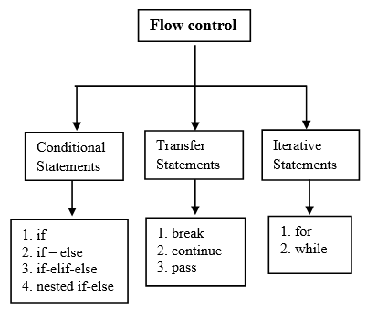

Example if
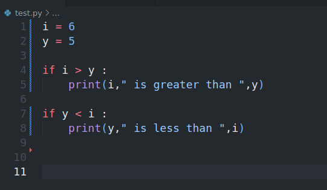

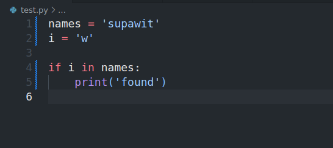
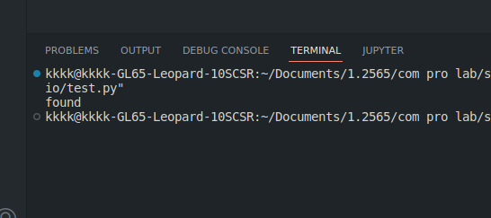
IF-ELSE
-
The
if-elsestatement is used to create a decision structure, which allows a program to have more than one path of execution. The if-else statement causes one or more statements to execute only when a Boolean expression is true. If the Boolean expression is false, then another set of statements is executed. The if-else statement checks the condition and executes the if block of code when the condition is True, and if the condition is False, it will execute the else block of code. -
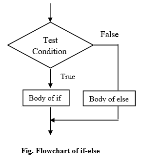
Example if-else
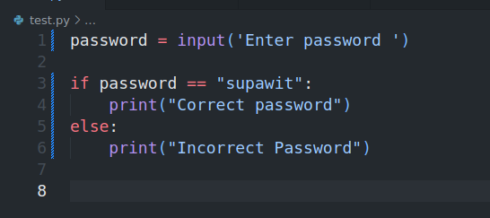
-
if the condition is true, the if block of code will be executed.
-
if the condition is false, the else block of code will be executed.

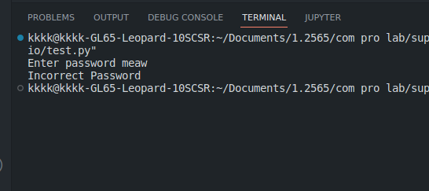
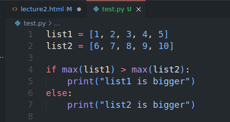
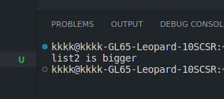
FLOW CHART
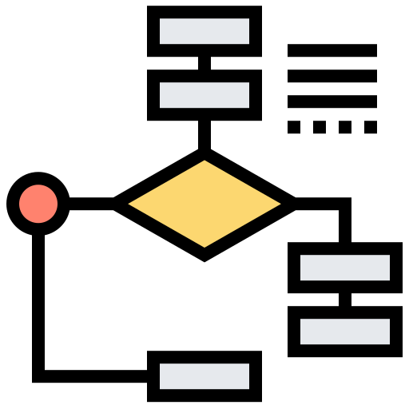
-
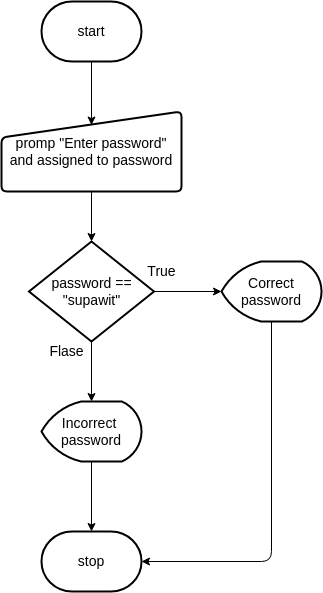
-
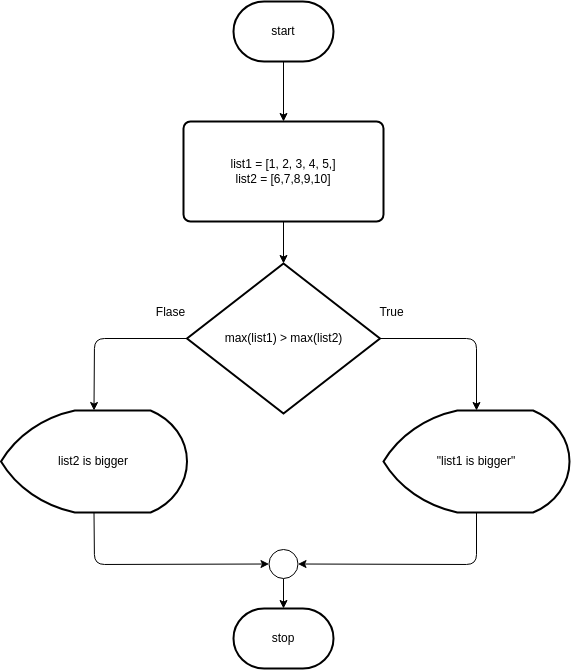
-
STRING COMPARISON
Example of string comparisonThe uppercase characters A through Z are represented by the numbers 65 through 90. The lowercase characters a through z are represented by the numbers 97 through 122. When the digits 0 through 9 are stored in memory as characters, they are represented by the numbers 48 through 57. (For example, the string 'abc123' would be stored in memory as the codes 97, 98, 99, 49, 50, and 51.) A blank space is represented by the number 32.


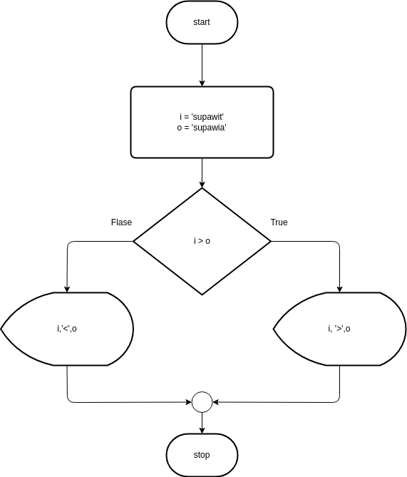
IF-ELIF-ELSE
The
elifstatement is used to create a decision structure, which allows a program to have more than one path of execution. The elif statement causes one or more statements to execute only when a Boolean expression is true. If the Boolean expression is false, then another set of statements is executed. The elif statement checks the condition and executes the if block of code when the condition is True, and if the condition is False, it will execute the else block of code.

Example!!
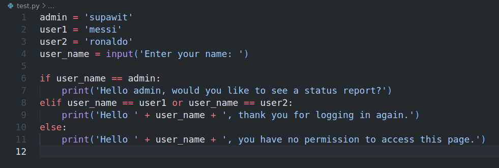
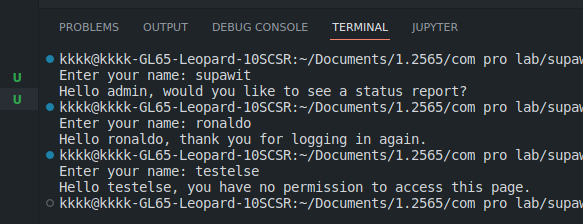
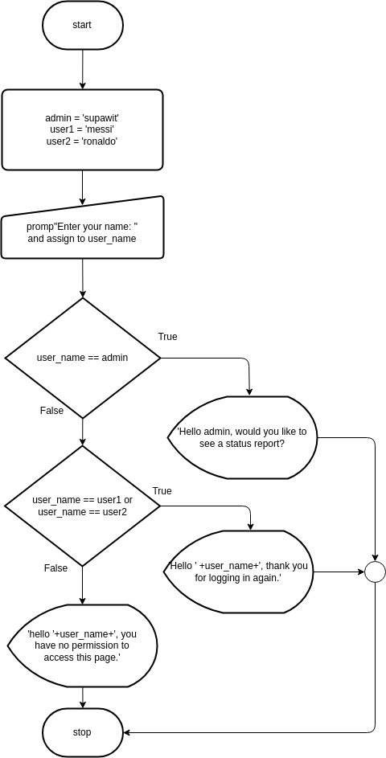
Program grade calculator
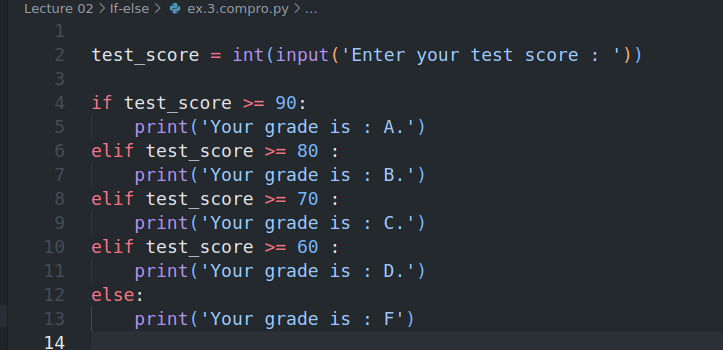

Calculator Program
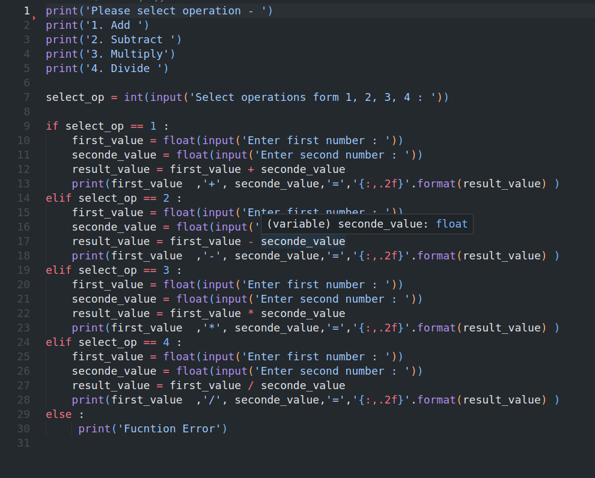

-
STRING COMPARISON
Example of string comparisonThe uppercase characters A through Z are represented by the numbers 65 through 90. The lowercase characters a through z are represented by the numbers 97 through 122. When the digits 0 through 9 are stored in memory as characters, they are represented by the numbers 48 through 57. (For example, the string 'abc123' would be stored in memory as the codes 97, 98, 99, 49, 50, and 51.) A blank space is represented by the number 32.
NESTED IF-ELSE STATEMENT
An if statement can be nested inside another if statement. This means that an if statement can contain another if statement. The inner if statement is executed only if the outer if statement is true.
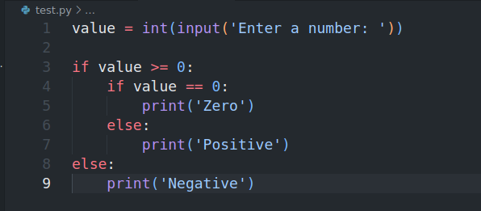
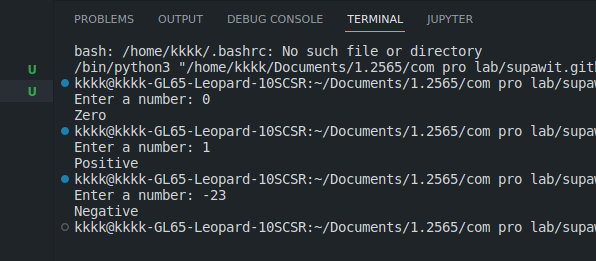
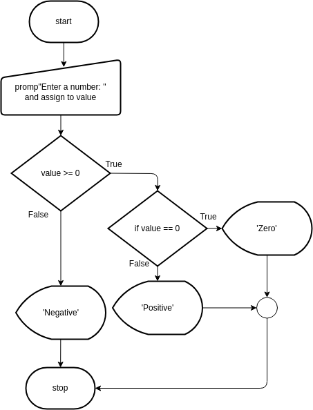
SINGLE STATEMENT
Whenever we write a block of code with multiple if statements, indentation plays an important role. But sometimes, there is a situation where the block contains only a single line statement. Instead of writing a block after the colon, we can write a statement immediately after the colon.
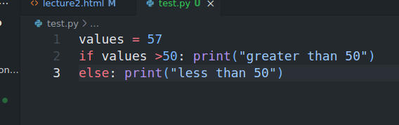
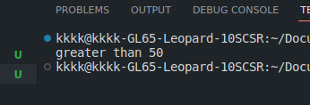
Thanks !
If you have any questions, please feel free to contact me.